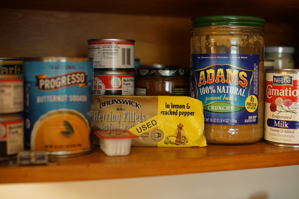

I finished Hina's sundress this afternoon and braved the 100 degree weather for 5 minutes to take photos. How often do you get to see brunette Hina anyway?
I wasn't excited to hem the circle but it only turned out to be a minor pain! I guess one good way is to sew a basting line where you want the fold to be and then roll over the hem in place. It worked! It took my entire set of pins to do half of the skirt though.


I love Hina so much. I love her most when she's looking sweet, but it's still fun to put her in a delinquent outfit. Sometimes I'll forget how cute she is when she's dressed cute and be shocked when I put her back in a cute dress. It's very silly!
Praline still needs her own outfit. I want to give this one back to kikipop! She may keep the wig for a while though. The brown wig looks stranger than the pink wig with the bright blue eyebrows.


Praline seems to be getting along well with my domestic wildlife. I'm going to have to take another family portrait one of these days. At this point it takes at least an hour to set up and even longer if I stripped a doll before putting (him) back in the box.
